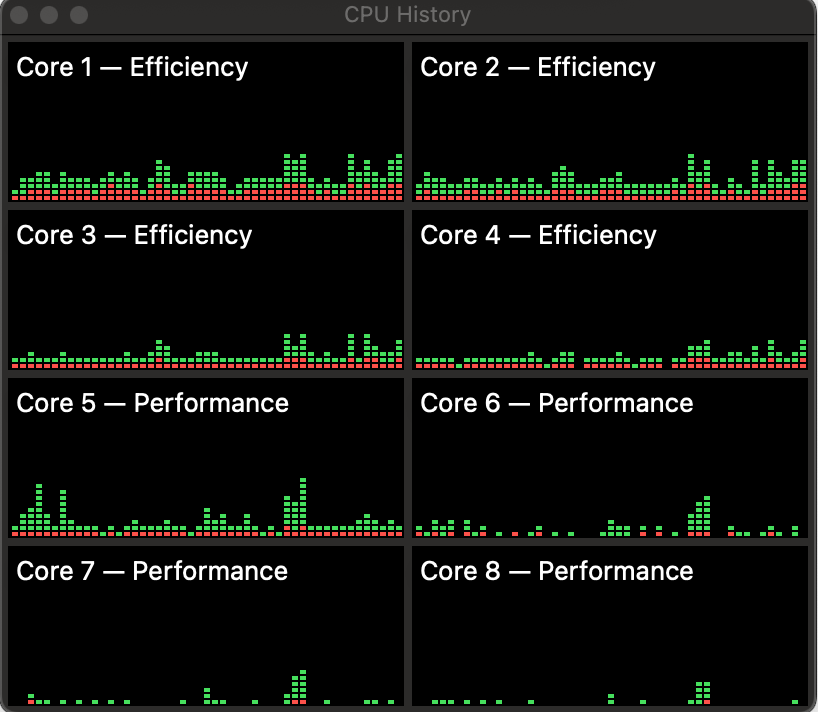
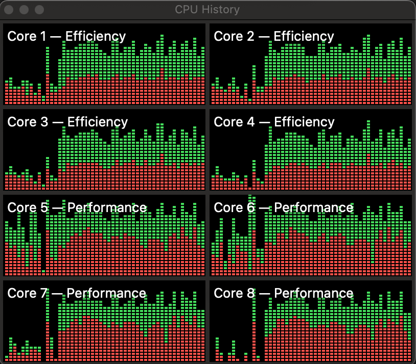

Episode 6: Cores
This episode and the next two will cover topics so interrelated i’m not sure which order to put them in. We’ve already touched on the idea that my computer, like most modern computers, runs multiple programs at the same time. In fact, if you’re not an old like me then pointing out this fact may not even make sense to you. It was even possible back in the days of my first PC (Unix was already over a decade old, even though Linux was still a ways off) but it wasn’t really a feature of the early personal computers 1.
There are really (at least) two different things happening. The first is an idea variously called multitasking, multiprogramming, or time-sharing. Although these have slightly different flavors, they all refer to giving multiple programs slices of time on a single processor, a concept that goes back to at least the 1960s. So, basically, it’s a cool trick to make it seem like the computer is running multiple things. Sometimes the term time-sharing is meant only to imply that multiple users can use the same computer at the same time, but i’ll probably use it along with the other terms to mean a type of concurrency.
Before discussing the second variation of “running multiple programs”, i need to introduce the concept of threads. As we saw in the last episode, the operating system treats running programs as processes, but the thing that executes on the processor is a thread. Every process has at least one thread, but as we’ll see a program often has numerous threads. Threads will be the topic of the next episode. The concurrency techniques introduced in the last paragraph depend on the ability to switch quickly from one thread to another, so fast that you don’t notice, an operating system function called scheduling, which will be the topic of the after-next episode. Note also that i’m talking specifically here about what are called system threads or kernel threads. There are implementations of user space threads, such as in the Python asyncio framework, but i don’t plan to talk about that (doesn’t mean i won’t). Also, sometimes the term task is used interchangeably with thread.
The other type of thing that happens is when the computer literally runs multiple programs at the same time, using multiple processors. This is a type of parallelism. Computer architects figured out pretty early on that running multiple things would be helped by simply having more than one CPU2 that could use the same memory. This idea in general is called symmetric multiprocessing, and again this idea goes back to the 1960s 3. In the 1990s, by which time the idea of operating system threads was already common, two different ideas emerged about how to run multiple threads. A paper from 19974 says:
Researchers have proposed two alternative microarchitectures that exploit multiple threads of control: simultaneous multithreading (SMT) and chip multiprocessors (CMP).
Both of these things are still around. SMT is the idea behind Intel’s hyperthreading, and the CMP concept is our topic here: cores. In fact, in some processors both are used at the same time, ie, multiple cores with SMT, although interestingly Apple’s ARM-based chips like my M2 do not (which might be good because it’s mind-bendingly complicated). Incidentally, one of the authors of the above paper is Kunle Olukotun, a Stanford professor who is sometimes called the “father of the multi-core processor”.
Around 2000 or thereabouts, commercial chip manufacturers introduced chips that had multiple processing units on the same chunk of silicon as described in the paper. At first we had dual core systems and then quad core, but eventually that naming convention faded. As of this writing Intel makes a chip with 288 cores5, though i don’t know if that’s the most.
The M2 chip in my computer is what they called a system on a chip (SoC) because almost all of the necessary circuitry is part of a single piece of silcon (except the DRAM). The chip has 8 cores, but they’re not all the same. There are 4 high-performance cores and 4 energy efficient cores (so i guess it’s duo-quad core?). Interesting, Apple apparently calls this asynmmetric multiprocessing since even though it’s using the same memory the sysem will allocate threads to different cores depending on their performance needs. We saw a first hint of the multiple cores in the last episode where ps command showed two processes running at the same time. In general, which cores things run on is transparent to both the user and the programmer, although there are ways to influence which type gets selected for a given process. See the taskpolicy command or the setpriority() system call.
The Activity Monitor app on the Mac has a nifty view that will show the CPU usage history per core. For example:

This is fairly casual usage– a bit o’ browsin’ a bit o’ writin’. You can see that the efficiency cores seems to get used fairly consistently, while the performance cores have more spiky usage. On the other hand, here’s what it looks like if i start a pytorch training run:

Definitely lights up the performance cores, but also lights up everything. The green parts in the chart are the fraction of core time devoted to the user program code, and the red parts are the fraction used by operating system functions.
I havent’ been able to find anything that says exactly how the efficiency and performance cores differ, but one major difference is that that they have different clock speeds, 2.42 GHz and 3.49 GHz respectively. I haven’t really talked about clocks, and probably you already know the term. If you’re unsure about the idea, think of it as an electrical pulse that synchronizes operations in the core. Each core can execute a certain number of instructions per clock cycle, so the clock speed (higher frequency = more cycles = more instructions) dictates how quickly the core can process instructions (my old PC had a clock of around 4 MHz!).
One thing i definitely did not know (until i read about it on the amazing Eclectic Light website), is that the clock frequency actually varies. For example, if i run this command as described in the linked article:
sudo powermetrics -i 100 -o power.txt -n 10 -s cpu_powerI see in the output that the CPU 0 frequency (one of the efficiency cores) ranges from a low of 1053 MHz to a high of 1760 MHz. Apparently this is a way of conserving power, and hence battery life on laptops. Of course whatever’s running will go slower with a slower clock, but that probably doesn’t matter if a program is not CPU-bound. This apparently goes by the name dynamic frequency scaling or CPU throttling.
The benefit of multiple cores is obviously that tasks don’t have to share the CPU so things speed up. This has the effect of making different programs more responsive (eg, you can update the formulas in your spreadsheet and still scroll Reddit). It also has the benefit that a single application can utilize multiple cores in parallel, for example pytorch uses multiple processes to get data to feed to the GPU. The penalty paid is complexity. The separate cores are using the same bus to fetch/store stuff, and the two types of cores share L2 cache, so there has to be some coordination between them.
Most of that complexity is in the hardware so you rarely have to think about it. However, programs often do have to be aware of the existence of multiple cores. At the least the operating system must, so that it can schedule tasks efficiently but we’ll get into the details of that later. Quite often though, the programs that you’re running regularly (browsers, word processors) will also create multiple threads of execution to take advantage of the multiple cores. That adds another type of complexity because threads created within a process are using the same memory space. No big deal so long as you’re only reading memory, but once the threads start writing data to memory, programming gets hard. Like, really difficult sometimes. Like, i mean, should we even really do this? Maybe we can come to some conclusions in Episode 7.
DOS eventually allowed what were called terminate-and-stay-resident (TSR) programs, which would stay in memory after they were started but they still had to be manually switched to.↩︎
Which, i mean, is it really central at that point?↩︎
As do i, to be fair.↩︎
https://www.datacenterknowledge.com/servers/intel-announces-next-gen-288-core-xeon-server-processor↩︎